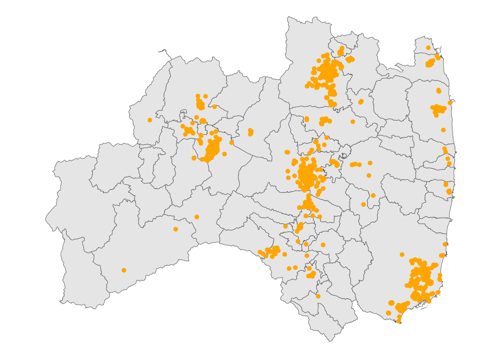
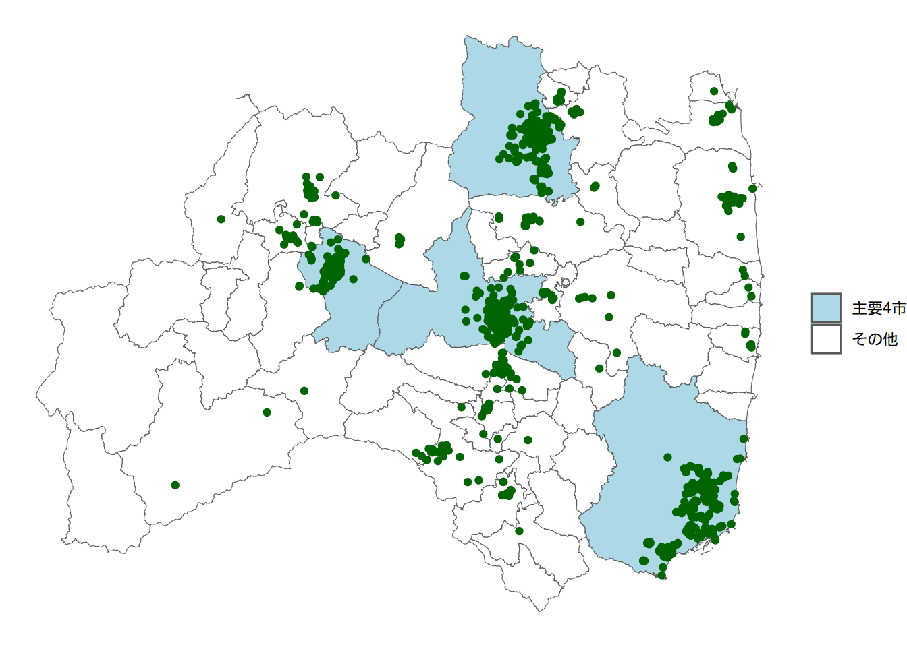
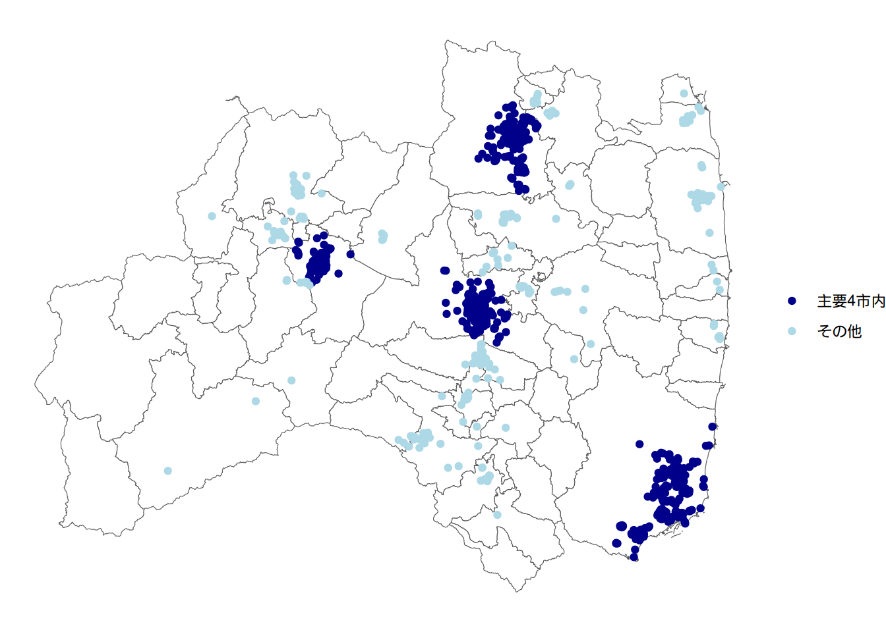

library(sf)
library(tidyverse)
library(here)はじめに
第1回でGISデータの読み込みと簡単なハンドリング、プロットを行いました。
今回は、1.5回として、プロットにフォーカスしてもう少し踏み込んでいきたいと思います。
使用するデータ
第1回と同じデータを用います。
福島県の行政区域データ（2024年、ポリゴン）
福島県の公園データ（2011年、ポイント）
これらのデータを、ワーキングディレクトリにdataフォルダを作って入れておいてください。
使用するパッケージ
sfとggplot2です。ggplot2はtidyverseパッケージ群に含まれていますので、後者で読み込みます。
データの読み込み
前回と同様です。公園のポイントデータには座標参照系（CRS）が設定されていないので、st_set_crs()でデータ本来のCRSに設定し、その上でJDG2011に修正しています。
fukushima <- read_sf(here("data/N03-20240101_07_GML/N03-20240101_07.shp"))
park <- read_sf(here("data/P13-11_07_GML/P13-11_07.shp"),
options = "ENCODING=Shift_JIS") |>
st_set_crs(st_crs(4612)) |> # JGD2000/(B, L) データ本来のCRS
st_transform(st_crs(6668)) # JGD2011/(B, L) 変換したいCRS
# 必要な変数を抽出＆リネーム
fukushima <- fukushima |>
select(
name_pref = N03_001, # 都道府県名
name_muni = N03_004, # 市区町村名
geometry # プロットに必要
)
park_s <- park |>
select(
name_park = P13_003, # 公園名
name_pref = P13_005, # 都道府県名
name_muni = P13_006, # 市区町村名
geometry
)プロットの基本
まずは前回のプロットを確認します。
ggplot() +
geom_sf(data = fukushima) +
geom_sf(data = park_s, color = "orange") + # 点の色も指定
theme_void()

ポイント：
ggplot()でプロットを開始geom_sf()で各地理データをプロット- 括弧内では
data =を明記（ないとプロットできない）
- 括弧内では
- コードを書いた順に上書き
- 公園のデータを先にプロットするとその後に書いた地図に消されてしまう
theme_void()でシンプルな背景に- 緯度経度までプロットしたいことはあまりないと思いますが、軸も表示しつつシンプルなテーマを使いたい場合はこちらも参考にしてください。
地図の塗りつぶし
全体
例えば、デフォルトで市町村はグレーに塗られていますが、ここも白にしたいとします。
ggplot() +
geom_sf(data = fukushima, fill = "white") +
geom_sf(data = park_s, color = "orange") +
theme_void()fillをgeom_sf()内で指定することにより、塗りつぶすことができます。
一部
時には一部の市町村だけ塗りつぶしたいこともあると思います。ここでは例として、公園が集中している福島市、郡山市、会津若松市、いわき市を塗りつぶしてみます。
まずはデータの加工からです。
fukushimaのデータを加工し、4市のいずれかであれば「主要4市」となる変数を作ります。
citiesに該当する市の名前を格納し、name_muni %in% citiesでname_muniがcitiesに入っていれば「主要4市」とラベリングされます。
cities <- c("福島市", "郡山市", "会津若松市", "いわき市")
fukushima <- fukushima |>
mutate(is_in4cities = if_else(name_muni %in% cities, "主要4市", "その他"))if_else(条件, 真, 偽)は、条件に当てはまっていれば真、そうでなければ偽の値をとるような関数です。
ダミー変数の場合
この場合真と偽はダミー変数の1, 0でもよいのですが、プロットの際に連続変数と扱われてしまい、少々面倒です。百聞は一見に如かずということで、ダミー変数で作った場合のプロットはこちらです。

これは色をいじっていないのできれいな図ではありませんが、凡例を見ていただければわかる通り、1, 0の2値ではなく連続変数扱いになってしまっています。
そのため、もし2値でしたいのであれば"1", "0"のように文字列として変数を作成するのが良いかもしれません。
次にis_in4citiesが1であれば塗りつぶすようにコードを修正します。
ggplot() +
geom_sf(data = fukushima, aes(fill = is_in4cities)) +
geom_sf(data = park_s, color = "orange") +
theme_void()aes(fill = is_in4cities)を追加したことで、色分けをすることができました。変数に対して色分けをしたい場合はaes()内で指定する必要があります。
しかしこのままでは色が非常に見にくいので、色を修正していきます。
ggplot() +
geom_sf(data = fukushima, aes(fill = is_in4cities)) +
geom_sf(data = park_s, color = "darkgreen") +
scale_fill_manual(
values = c("white", "lightblue")
) +
theme_void()これでより見やすいプロットになりました。scale_fill_manual()では、aes(fill = )で設定した変数に対してvalues =で色を割り当てることができます。
例えば人口など連続変数をマッピングしたい場合はまた別ですが、離散値の場合は基本的にこの方法でプロット可能です。今は2種類しかないのでc("white", "lightblue")ですが、3種類以上でも可能です1。
凡例の整理
図 4 では地図自体は整理できたものの、凡例部分が未整理です。
例えばis_in4citiesは消したいし、主要4市はその他の上にあってほしいです。
その設定をするコードは以下です。
ggplot() +
geom_sf(data = fukushima, aes(fill = is_in4cities)) +
geom_sf(data = park_s, color = "darkgreen") +
scale_fill_manual(
values = c("white", "lightblue")
) +
guides(fill = guide_legend(title = NULL, reverse = TRUE)) +
theme_void()

ポイント：
guides()内でfillを指定- これは
aes()内でfillを使用しているため2
- これは
guide_legend()内でtitle = NULLを指定- 文字通りタイトルを空にする
guide_legend()内でreverse = TRUEを指定- 要素の順を逆転させる
点を色で塗り分ける
今度は点に色を付ける方法です。これまではオレンジや濃い緑で統一して色を付けてきましたが、これを色分けしていきます。
先ほどと同様、分け方に従って変数を追加します。先ほどと同様の4市に含まれる公園に色を付けるとします。
park_s <- park_s |>
mutate(is_in4cities = if_else(name_muni %in% cities, "主要4市内", "その他"))ほとんど同じです。
続いてプロットを行います。
ggplot() +
geom_sf(data = fukushima, fill = "white") +
geom_sf(data = park_s, aes(color = is_in4cities)) +
theme_void()先ほどとの違いは、aes()内でfillではなくcolorを使っている点です。文字通りfillは塗りつぶしですので、点ではcolorを使います。
ここからは塗りつぶしで行った手順をまとめて行っていきます。
ggplot() +
geom_sf(data = fukushima, fill = "white") +
geom_sf(data = park_s, aes(color = is_in4cities)) +
scale_color_manual(
values = c("lightblue", "darkblue")
) +
guides(color = guide_legend(title = NULL, reverse = TRUE)) +
theme_void()

これで点の塗分けも可能になりました。
ポイント：
scale_color_manual(values = )で色を指定- 先ほどは
fillだったが今回はcolorを使っている
- 先ほどは
guides()- 1と同様
color =になっている - 他は塗りつぶしと同じ
- 1と同様
凡例の位置
最後に、凡例の位置はtheme()内で変更可能です。
ggplot() +
geom_sf(data = fukushima, fill = "white") +
geom_sf(data = park_s, aes(color = is_in4cities)) +
scale_color_manual(
values = c("lightblue", "darkblue")
) +
guides(color = guide_legend(title = NULL, reverse = TRUE)) +
theme_void() +
theme(
legend.position = "bottom"
)凡例については他のプロット同じなのでこちらも参照してください。
おわりに
今回は1.5回としてR上での地図のプロットをまとめました。今後の回でまた別タイプのプロットが出てくるかもしれませんが、その都度紹介していきます。